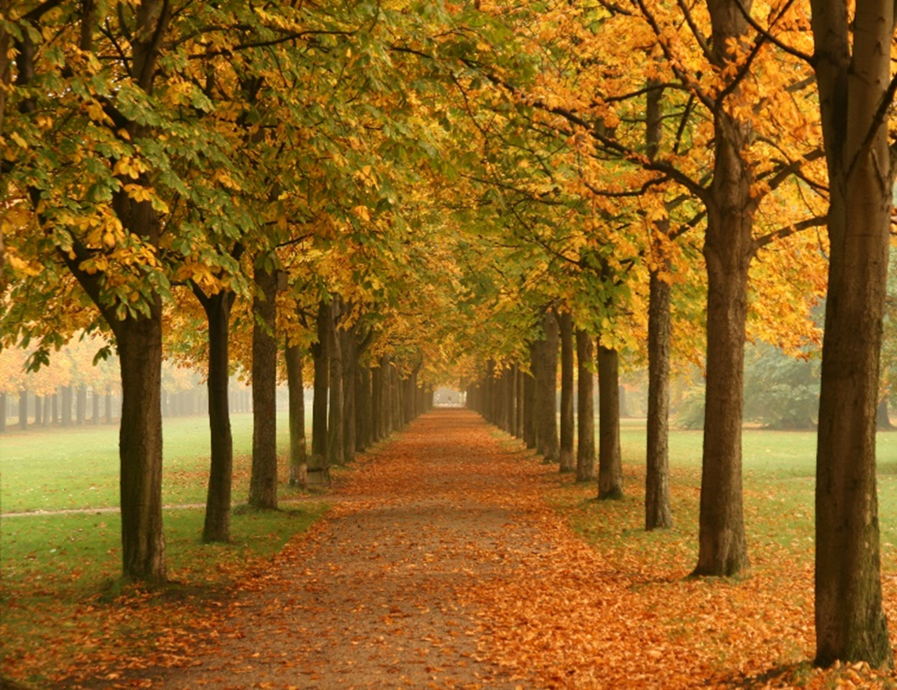

This is why I like fall. I like fall because it's the best time to go on walks. I also like fall because I get to build a campfire and eat smores! And the leaves are gorgeous!! But the one thing I don't like about fall is that it gets colder. :( another reason I don't like fall is that school starts again, but I do get to see my friends more often!
 Home